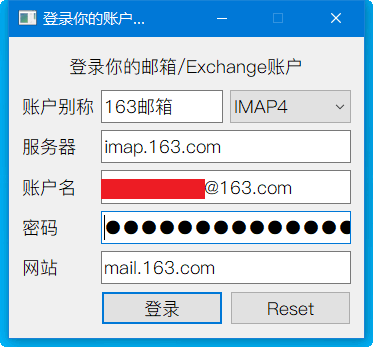

Inlook用户指南
安装
- 点我下载 (提取码 a1b2)
- 双击
Inlook V1.0.0.3.exe,选择目标文件夹到你想安装的目录(建议路径不要有中文)

- 点击
安装.
安装过程会将所有源码解压到安装目录,写得不好请见谅,欢迎大佬指导.
- 完成安装,可以看到桌面已经生成快捷方式(链接到安装目录的
start.bat).
添加邮箱账户
安装完成后, 会自动弹出登录窗口,在窗口中登录你的邮箱.
- 账户别称: 你给这个邮箱账户起的名字,后面会显示在软件中.
服务器: 去邮箱官网的
帮助中心,查询邮箱的IMAP服务器.QQ邮箱的IMAP服务器
imap.qq.com;163邮箱的IMAP服务器
imap.163.com;其他服务器请在邮箱首页的帮助中心查看.
- 账户名: 填写你的邮箱地址.
- 密码: 填写你的邮箱密码.
如果是163邮箱和QQ邮箱,需要填写授权码. 查看163邮箱的授权码获取方法,QQ邮箱的授权码获取方法.
- 网站: 填写邮箱的网页站点，如
mail.163.com,mail.qq.com,mail.cstnet.cn等.
- 点击登录,弹出超大登录成功消息

- 可以看到已经在Windows桌面出现啦~~
- 如果需要继续添加
邮箱账户,请点击添加账户按钮.
添加Exchange账户
这里以添加outlook账户为例.
- 点击主页面
添加账户按钮,选择账户类型为Exchange.

- 填写账户信息
- 账户别称: 你给这个账户起的名字,后面会显示在软件中.
- 服务器: 去邮箱官网的
帮助中心,查询邮箱的Exchange服务器.Outlook账户的服务器
eas.outlook.com - 账户名: 你的 Exchange 账户
- 密码: 相应的账户密码
- 网站: 填写Exchange的网页站点，如
outlook.live.com等.- 点击登录,弹出超大登录成功消息
- 可以看到已经在Windows桌面出现啦~~
主页面已经可以看到日程和邮箱未读数.
手机添加Exchange账户
这里以菊厂的自带日历为例.其他手机应该没别的问题,有问题也别找我,不归我负责.
- 打开华为日历，点击右上角
三个点-点日历账户管理-点添加账户； - 填写登陆账户信息，地址填写邮箱地址，密码为邮箱登录密码。
- Exchange账户登陆成功就可以正常进行账户同步, 可以设置你的同步周期为15分钟。
添加日程
- 点击主页面
添加日程按钮,弹出添加日程对话框. - 填写添加日程的信息.
- 点击确认.
- 一分钟后,可以看到主页面已经自动同步到了
Inlook的窗口,窗口大小根据日程数目自适应伸缩.
- 查看手机,也可以看到了
如果没有看到,是你的手机同步频率设置得低了,反正不是我的锅, 你需要在手机这边 手动同步 一下.
- 到时候后本软件自动强力提醒, 应该是 半分钟之内无法关闭的窗口 , 同时伴随 魔力铃声 .
你在手机端删除日程,
Inlook也会同步删除哦~
移动和缩放界面
切换语言及鼠标穿透
- 中文界面的每日一句功能有jinrishici API提供,感谢！
- 英文界面的每日一句功能有爱词霸提供,感谢！
- 鼠标穿透功能可以让
Inlook停止捕获鼠标,安静地躺在桌面最下层,不影响你的正常办公~
提醒
添加你的邮箱账户可以实现新邮件提醒, 你需要提前获取你的邮箱的IMAP的服务器信息，部分邮箱如163，QQ邮箱登录时需要授权码而不是密码。
在本软件和手机自带的日历中添加同一个
Exchange账户(我自己测试的是Outlook),可以实现日程多端自动同步, 日程提醒。任何时候可以直接在托盘修改语言,无需重启软件.
自1.0.0.1发布版之后,去除了快捷方式的开机启动,如有需要,请自行生成指向start.bat的快捷方式,并拖放到
C:\Users\[username]\AppData\Roaming\Microsoft\Windows\Start Menu\Programs\Startup目录.
其他说明
自己为了自己用写的软件，代码全部开源，你可以下载后直接修改作为自己喜欢的版本；
因使用本软件产生的问题，后果自负；
本软件中用到了
PyQt,exchangelib,需自觉遵守开源协议，禁止商用；自己的Win10上用的很好,可能不自动适配你的电脑屏幕，请自行修改，也希望能帮我改，可以一块合作。
支持请发热心和好评，欢迎一起Debug.
为了使用方便，添加了桌面快捷方式,如果需要去除，请到系统文件夹内删除快捷方式即可。
正在加载今日诗词....